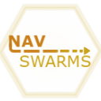

|  |
NavSwarms 1.0.0
Unreal plugin for aerial AI navigation
|
NavSwarms is a Unreal plugin to provide 3D pathfinding for Unreal Engine 5. Primarily designed for baking large voxel grids, and using the provided ANavSwarmsManager to queue pathfinding queries using an optimized custom A* algorithm.
This plugin is focused on providing an easy and efficient way to manage flying AI which needs a system that is not covered by the Unreal native AI navigation system.
Key features:
Simply drag the contents to the Plugins folder on your Unreal project, if there's no Plugins folder you can create a new folder with that exact name. Make sure that Visual Studio 2022 is also installed with the game development with C++ modules.
Locate the .uproject of your project, right click and select Generate Visual Studio Project
Finally go to Edid -> Plugins and make sure that the plugin is enabled, if it's already enabled don't worry, you can just skip this step.